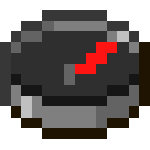
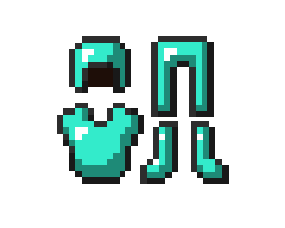

Compass Consumer Goods
A line presenting everyday objects as Compass technology, including a navigation compass and a clock.
From experiments to consumer goods
Compass R&D occasionally allows successful experiments considered non-dangerous to be sold at Broville's Consumer Goods Labs. The Compass Consumer Goods line turns everyday objects, including a compass, a clock and clothing, into products presented with technical language and satirical warnings.



Compass Chronoligical Display Unit
The unit displays the time of day using Minecraft “ligic”. The text emphasizes that actual time is relative to the user. Its warning forbids applying logic to devices using “ligic”, on pain of partially or totally losing one's sense of time. “Chronoligical” and “ligic” preserve the spellings used in the product name and its humorous explanation.
Compass-branded Otherwear
The clothing promises to improve tasks such as successfully taking on fire, failing at bungee jumping and swimming with mermaids, though not living with them. The manufacturer's note instructs users to read each item's restrictions carefully: Compass LTD accepts no responsibility for improperly used products.
Original documents
Read the in-world texts behind this article. Expand a title to read its full transcription; some texts reveal clues and endings.
Read original document — OptiServ 2000 ManualCompass · 6 pages · Spoilers
Page 1
Page 2
Page 3
Page 4
Page 5
Page 6
Book recorded at -308 72 1826. Source: SPOILER_bookOutput.txt. Original spelling retained.
Gallery




See also
Sources and references
- v11.4.4 maps, signs, books and items World records
- Compass Consumer Goods · Broville Wiki Community archive
Text adapted and expanded from Compass Consumer Goods (contributors and history, revision 5036). Adapted text is available under CC BY-SA 3.0.